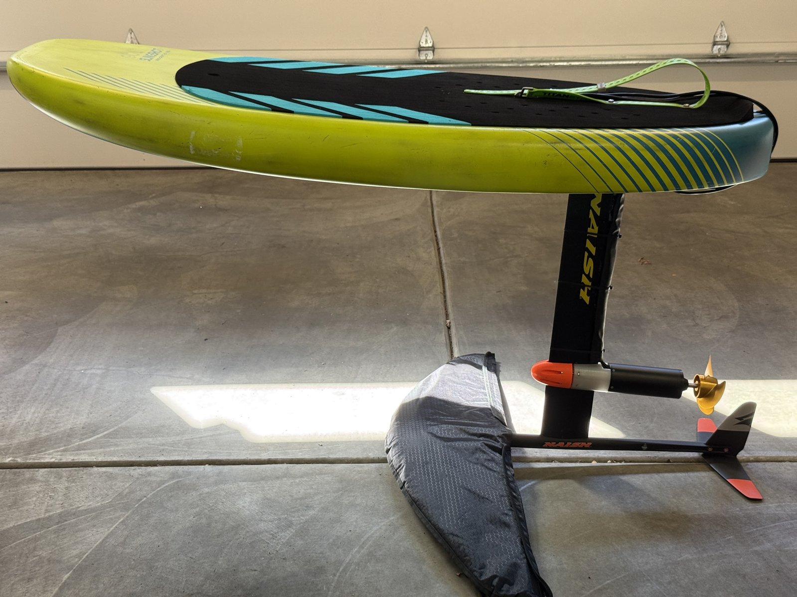
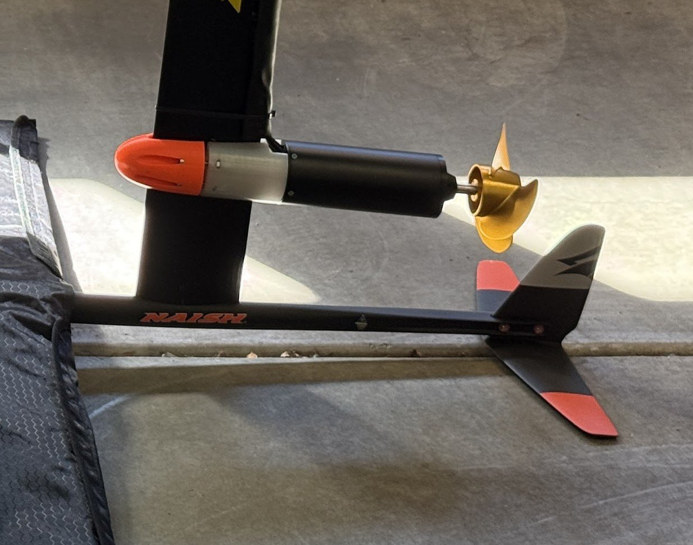
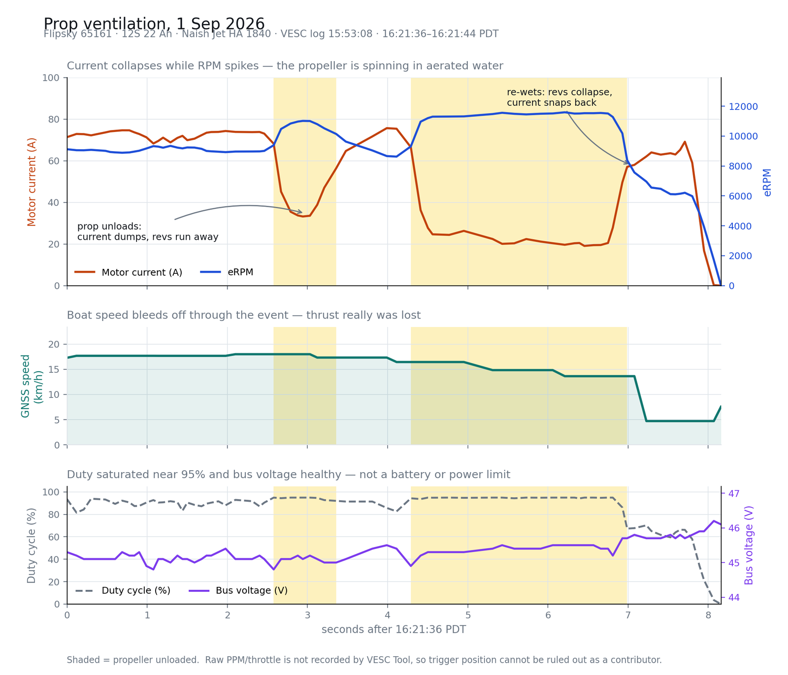

The eFoil of Theseus (draft)
Note: this is an unpublished draft. If you are reading this, please don't forget to share your feedback with the author!
This is an outline, not prose. Target ~900 words. For comparison: ESUP Builders was 706 words, the forum version was 1,460.
Thesis: in 2020 I was afraid of electricity. The electrical problems turned out to be the tractable ones — they leave evidence. What actually stopped me was water, fluid dynamics, and my own balance.
Intro
~120 words. Ends on the machine, not the feelings.
- In 2020 I promised a technical summary of the eSUP build, and then didn't write it.
- Half that debt got paid elsewhere: the component-level notes ended up on my wiki at Naval Architecture 101.
- What I never wrote down is what happened when I tried to make the thing actually fly.
- Six years later it flies. For about a second. Then I fall off.

What I thought was hard
~200 words. The thesis section — everything downstream supports this.
- 2020 me was proud of having installed a ceiling fan and some outlets, and openly nervous about high voltage and high current.
- Nearly everything I wrote down back then was electrical: motors, ESCs, KV ratings, wire gauge, connectors, LiPo chemistry. That's what I assumed the hard part would be.
- Six years on, every electrical problem eventually yielded — because electricity leaves evidence. Logs, fault codes, numbers you can plot.
- The things that actually stopped me don't leave logs: water in the box, air on the propeller, and my own balance.
- Candidate closing line: the electricity was the part that came with a manual.
Six years in four lines
~150 words. Keep it a list. Resist retelling the build.
- 2020 — IKEA bin, then the eSUP. 5 mph. Fun, far too slow.
- 2022 — Dropped the prop duct, fitted a mechanical kill switch. 21 km/h, planing, still glued to the water.
- 2024 — Bigger front wing, 1,220 → 1,840 cm². First brief lifts.
- 2026 — Shorter board, current-mode throttle. It flies. For about a second, and then it doesn't.
- Honest aside if you want it: two young kids and a three-month season is the real reason this took six years, not the engineering.
- Consider dropping in
esup.giffrom the 2020 post here for contrast.
The eFoil of Theseus
~150 words. The title's payoff, and the most blog-shaped idea in the project.
- Everything has been replaced at least once: board, front wing, battery, mast mount, propeller, throttle firmware.
- Untouched: the entire back half of the foil — fuselage, stabilizer, vertical fin. All still 2019 parts.
- Including the same 65 cm Naish mast from the 2020 post, where I linked it as
[Naish 65cm mast](TODO)and never filled in the TODO. - And the one untouched piece is now the prime suspect. The propeller sits a few centimetres ahead of a vertical fin that Naish designed for a windsurf foil, not for living in a propeller's wake.

What I actually learned
~250 words. The summary I owed in 2020 — as three principles, not a tutorial.
- Instrument it, or you're just guessing. For two years I had no telemetry and roughly one theory per season. The biggest single fix — moving the throttle from duty-cycle to current control — was invisible until there were logs.
- The failure is almost always mechanical. Every time I blamed the electronics, the electronics were fine. The culprits were a propeller ventilating in aerated water, a foil out of trim, and a rider out of practice.
-
Waterproofing is a tax, not a task. The box still leaks. It has leaked for six years. Its only confirmed kill is the data logger I bought specifically to stop losing data.
-
Irony available: in 2020 the 65 cm mast put the prop so deep it mowed lake weeds. Now the same mast puts it near enough to the surface to suck air. Same part, opposite failure.
- End the section by handing off the component-level material to Naval Architecture 101. That discharges the 2020 promise without turning this into a tutorial.
- Decide whether the telemetry chart earns its place — it's the only evidence in the post that this was ever an engineering project.

Still learning to ride the damn thing
~120 words. The close. Don't resolve it — the post is better unfinished, because it is.
- Quote 2020 me: "a big part of the challenge will be learning to ride the damn thing. I think I'm up for the challenge!" Still the most accurate sentence in that post.
- Describe the dolphining plainly: rise, breach, drop, repeat.
- Land the fact that a machine good for 27 km/h is currently rate-limited by my ankles.
Current components
~80 words + list. Formal rhyme with the 2020 post, which also closed on parts lists.
Electronics:
- ESC: Flipsky FSESC 200A 60V (VESC 6 based)
- Motor: Flipsky 65161 100KV inrunner, sensorless — the shipping-container motor from 2020
- Battery: 2 × 6S 22 Ah LiPo in series (12S 22 Ah)
- Remote: Flipsky VX3
- Propeller: Flipsky Ultra 3-blade aluminium
- Kill switch: mechanical, inline
- Logging: VESC Tool over BLE, plus one drowned Voyage Minnie
Mechanics:
- Board: Slingshot Wing Craft V2 90 L
- Front wing: Naish Jet HA 1840
- Fuselage, stabilizer, mast: Naish Thrust WS 2018/2019 — the same 65 cm mast as SUPSMUS v1
- Motor mount: 3D printed mast clamp — see mount note below
- Enclosure: Pelican case, still leaking
Closing line: one sentence pointing at the forum thread for anyone who wants the gory detail.
Reference — delete before publishing
Callbacks available
From /esup-builders/, July 30 2020:
- "I plan to write up a technical summary of what I learned in the process. Stay tuned." ← the IOU
- "a motor ten times the power of this one is sitting in a shipping container, en route to my basement." ← that's the 65161
- "a big part of the challenge will be learning to ride the damn thing. I think I'm up for the challenge!"
- Links
[Naish 65cm mast](TODO)— TODO never filled in. Same mast still on the boat.
From the abandoned draft at content/posts/2020/how-to-build-an-electric-boat/ (not publishing this, but quotable):
- "Foiling is probably awesome: I didn't get to foil yet … However the promise is incredible."
- Concludes the motor has 7 coils, from a slow-motion video. It has 6.
- "the 65cm mast … meant the propeller was quite deep in the water, deep enough to 'mow the lawn'"
Motor mount — what I could find
- No Google Drive is synced to this machine, so anything living only in Drive is unreachable.
- The only mount CAD anywhere on disk is the same Onshape doc already linked from the 2020 post:
9008f491…. It still resolves publicly. - Onshape
/w/URLs render the current state of a document. If you kept iterating in that same doc, that link is the latest mount. - Your eSUP notes (July 15, 2020) say "printing the new prop and rear mount thanks to Matthew Wilson" — if the current mount is his or came from efoil.builders, credit that instead.
- Fallback: no link, and let
efoil-motor-mount.jpgcarry it.
Images in this directory
| File | What it is |
|---|---|
efoil-profile.jpg |
Side on: board, mast, motor, prop, tail. Suggested hero. |
efoil-rear-view.jpg |
Down the fuselage, outdoors, front wing visible |
efoil-tail-fin.jpg |
Tight crop: prop, vertical fin, stabilizer. The evidence shot. |
efoil-mast-track.jpg |
Mast forward in the tracks, cm scale visible |
efoil-enclosure.jpg |
Pelican box and taped cable entries |
efoil-ventilation.png |
Telemetry: current dumps while revs run away |
efoil-motor-mount.jpg |
The 65161 clamped to the mast |
Reusable from /esup-builders/: esup.gif, tropfast.jpg, esup.jpg, esup-drive.jpeg, 3d-prop.png, 3d-mast-clamp.png